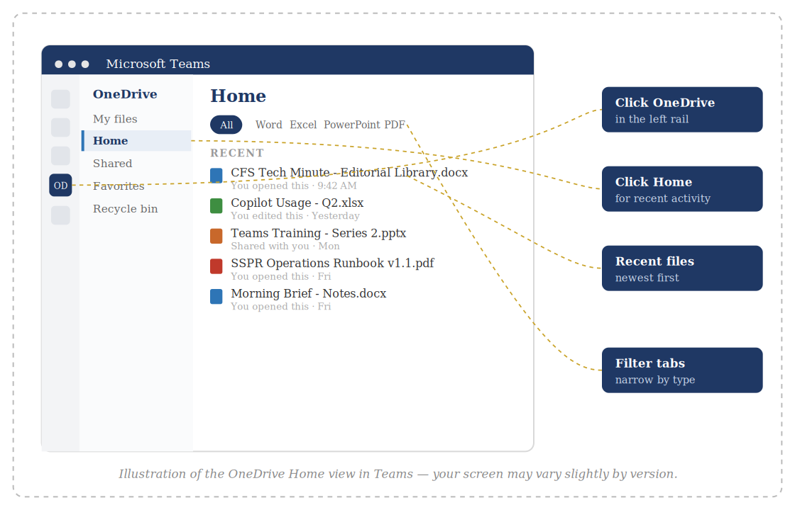

One quick tip. About a minute to read. Something you can use today.
This Week’s Tip
Find any file you’ve recently worked on, right inside Teams — no browser, no folder digging.
Why it matters
How often have you opened Teams, then jumped to a browser, then hunted through folders trying to remember where you saved that file? You don’t have to. OneDrive lives right inside your Teams desktop app, and its Home view shows you every document you’ve recently opened, edited, or shared with you — all in one place.
How to do it

Illustration of the OneDrive Home view in Teams — your screen may vary slightly by version.
Try an AI prompt this week
Open Copilot Chat in your Teams desktop app.
Past issues live on the CFS intranet — IT Help & Resources.
Have a topic idea or question? Email HelpDesk@cfsny.org.
— Jim Noriega and the CFS IT Team